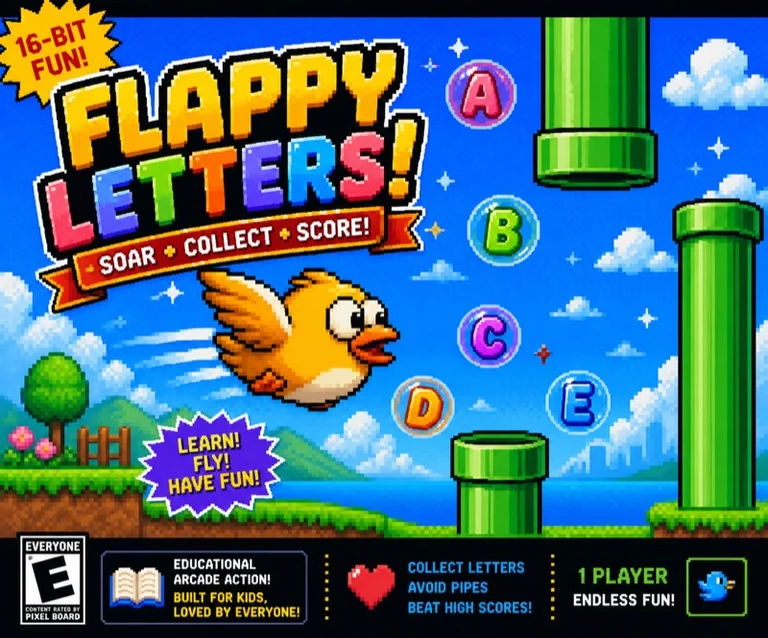

下一步：在普通局先飞过一根管道

三段飞行路线 · 完美穿越蓄羽盾 · 按住滑翔救急
点一下扇翅，松开等下降 · 同词挑战试玩候选 r1 · 待独立实玩复核
两种练习均可自选，不计分；随时回原选模式。
点一下，扇一下 · 不用按住屏幕
看绿色缺口 · 居中穿越攒羽盾
快落地时按住滑翔 · 完美穿越补充能量
拼词：接住下一字母。选择：穿过正确答案门洞。完成 5 题升级并回复生命。每 8 根管道获得航段徽章。
空格 / ↑ 扇翅 · G 滑翔 · H 提示（15 分）· P 暂停 · M 静音
也可自选专项 · 不计分
同词练习 · 不计最高分
按 P 或 Esc 继续